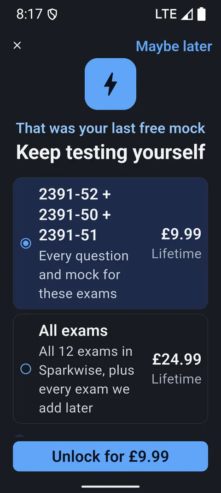
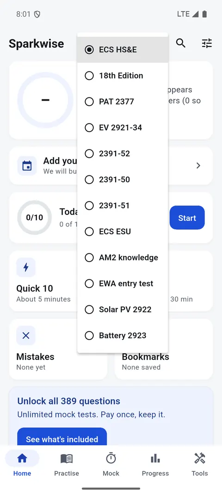

Not a government app. Sparkwise is an independent study app made by Kodfu Bilisim. It is not affiliated with or endorsed by the IET, BSI, City & Guilds, EAL, NET, the ECS, the JIB, NICEIC, NAPIT, MCS, HSE or OZEV. It does not contain the real exam questions and never reproduces BS 7671 text.
All exams › 2391 inspection and testing
2391 exam questions: 2391-52, 2391-50 and 2391-51
Each City & Guilds 2391 inspection and testing award has an open-book online multiple-choice exam: 60 questions in 2 hours for 2391-52, and 40 questions in 90 minutes for 2391-50 and 2391-51, with a pass mark of about 75%. This page sets out the formats and what each exam covers, then gives you 10 free practice questions with answers. Sparkwise has 462 questions for the three exams and timed mocks in each format, in one unlock.
Practise 2391: get Sparkwise on Google Play Try 10 free questions
Free in the app: 210 questions and one full mock for each 2391 exam. 2391 unlock: £9.99 once for all three exams. No subscription. Android now; iPhone version not yet available.
On this page
Which 2391 do you need?
All three are Level 3 awards for practising electricians who already hold a Level 3 electrotechnical qualification. They are not for people new to the trade.
- 2391-52, Initial and Periodic Inspection and Testing: both jobs in one award. Inspecting, testing and certifying new work, and reporting on the condition of existing installations (EICRs).
- 2391-50, Initial Verification: inspecting, testing and certifying new installation work only.
- 2391-51, Periodic Inspection and Testing: inspecting and testing installations in use and writing condition reports, including classifying observations as C1, C2, C3 or FI.
Each award also has a practical assignment and a written task at the centre. Sparkwise covers the online multiple-choice exam of each one.
The online exam format
| Item | 2391-52 | 2391-50 | 2391-51 |
|---|---|---|---|
| Questions | 60 multiple choice | 40 multiple choice | 40 multiple choice |
| Time | 2 hours | 90 minutes | 90 minutes |
| Pass mark | About 75% (Sparkwise mocks: 45 of 60) | About 75% (30 of 40) | About 75% (30 of 40) |
| Books | Open book: paper copies of BS 7671, the IET On-Site Guide and IET Guidance Note 3, plus a non-programmable scientific calculator | ||
| Questions in Sparkwise | 292 | 297 | 374 |
Source: the City & Guilds 2391-52, 2391-50 and 2391-51 handbooks and the 2391 qualification page. City & Guilds says the pass mark may be adjusted between cohorts, and that its 2391 assessment tasks will be aligned with BS 7671 Amendment 4 in due course; ask your centre which amendment your test follows. Sparkwise questions follow BS 7671:2018+A4:2026, the only current edition. Many topics are shared, so the three exams together have 462 different questions in the app.
What the exams cover
Testing is more than half of every 2391 paper: 33 of 60 questions in 2391-52, 27 of 40 in 2391-50 and 26 of 40 in 2391-51. Expect calculations from test results, such as expected R1+R2 from cable length, Zs from Ze, and whether a reading passes.
| Learning outcome | 2391-52 | 2391-50 | 2391-51 |
|---|---|---|---|
| Requirements for inspection and testing (and certification) | 13 | 3 | 5 |
| Safety and safe isolation | 3 | 3 | 2 |
| Inspection | 11 | 7 | 7 |
| Testing | 33 | 27 | 26 |
| Total | 60 | 40 | 40 |
In Sparkwise the 2391 questions are grouped into topics: requirements and legislation, certificates and signatories, safe isolation, inspection, test instruments and GS38, continuity and ring final circuits, insulation resistance and polarity, earth electrode, Ze, Zs and fault current, RCDs and functional tests, and periodic inspection and coding. 2391-50 adds the test sequence and verifying results; 2391-51 adds condition reports, classifying observations and testing an installation in use. 42 calculation questions have a step-by-step worked solution.

Three exams, one £9.99 unlock
The 2391 unlock in Sparkwise opens every question and mock for 2391-52, 2391-50 and 2391-51. Pay once; there is no subscription. All exams, £24.99 once, adds every other exam in the app.
10 free 2391 exam questions
Questions from across the 2391 topics in Sparkwise, with the answer and a short explanation. They are original questions written from public sources on the same topics, not City & Guilds questions, and they never reproduce BS 7671 or Guidance Note 3 text.
Question 1 · Choose one answer
Who decides how large a sample to inspect and test during a periodic inspection?
- The inspector, using records and condition
- The client, to keep the price down
- BS 7671, which fixes it at 10 per cent of points
- The distributor, from its network data
Show the answer
Answer A: The inspector, using records and condition
Sampling is the inspector's judgement, based on the records, age, condition and maintenance of the installation, agreed with the client as part of the extent.
Source: IET GN3 · sampling
Question 2 · Choose one answer
Testing takes place in a school during term. What should the risk assessment include?
- Keeping pupils away from open boards and leads
- Testing only circuits that supply classrooms
- Leaving circuits live so lessons are not affected
- Asking pupils to report any loss of supply
Show the answer
Answer A: Keeping pupils away from open boards and leads
Open enclosures, test leads and live tests are hazards to others. Barriers, supervision and timing keep pupils and staff away.
Source: C&G 2391-52 AC 2.1 · HSWA 1974 s3
Question 3 · Choose one answer
Where must a label warning against removal of an earthing or bonding connection be fitted?
- At bonding clamps on gas and water pipes
- Only on the consumer unit lid
- Only at the electricity meter
- Only on the green-and-yellow cable sheaths themselves
Show the answer
Answer A: At bonding clamps on gas and water pipes
The label goes at the connection of earthing conductors to electrodes and of bonding conductors to extraneous parts, where someone might disconnect them.
Source: BS 7671 Reg 514.13.1
Question 4 · Choose one answer
A 30 m radial in 2.5/1.5 mm² cable has R1 + R2 of 19.51 mΩ/m at 20 °C. What is the expected R1 + R2 at 20 °C?
- 0.59 Ω
- 0.70 Ω
- 0.22 Ω
- 0.36 Ω
Show the answer
Answer A: 0.59 Ω
30 m × 19.51 mΩ/m = 585 mΩ, about 0.59 Ω. 0.70 Ω applies the 1.2 multiplier, and 0.22 Ω or 0.36 Ω use one conductor only.
Worked solution. Formula: R1 + R2 = length × (r per metre) ÷ 1000
- Find mΩ per metre: 2.5/1.5 mm² = 7.41 + 12.10 = 19.51 mΩ/m
- Multiply by length: 30 × 19.51 = 585.3 mΩ
- Convert to ohms: 585.3 ÷ 1000 = 0.59 Ω
Common mistake: Multiplying by 1.2 gives the 70 °C value (0.70 Ω), not the 20 °C one.
Source: IET GN3 · OSG App I conductor resistance
Question 5 · Choose one answer
What test voltage is used for the insulation resistance of a SELV circuit itself?
- 250 V DC
- 500 V DC
- 1000 V DC
- 50 V AC
Show the answer
Answer A: 250 V DC
SELV and PELV circuits are tested at 250 V DC, with a minimum of 0.5 MΩ.
Source: BS 7671 Table 64
Question 6 · Choose one answer
A general 30 mA RCD takes 320 ms to trip at IΔn. What is the result?
- Fail: over the 300 ms limit
- Pass: under the 500 ms limit
- Pass: S-type devices may be slower
- Pass: the limit is only checked at 5 × IΔn
Show the answer
Answer A: Fail: over the 300 ms limit
A general non-delay RCD must trip within 300 ms at IΔn. 320 ms fails; 500 ms applies only to S-types.
Source: BS EN 61008-1 · IET GN3
Question 7 · Choose one answer
What is the usual recommended maximum interval for industrial premises?
- 3 years
- 5 years
- 10 years
- 6 months
Show the answer
Answer A: 3 years
Industrial installations face harsher conditions and heavier use, so guidance gives 3 years.
Source: IET GN3 · recommended intervals
Question 8 · Choose one answer
Ze is 0.22 Ω and a B20 radial's R1 + R2 is 0.48 Ω. Its tabulated maximum Zs is 2.19 Ω. What is the expected Zs, and is it acceptable?
- 0.70 Ω, acceptable
- 0.70 Ω, too high
- 0.26 Ω, acceptable
- 1.75 Ω, at the limit
Show the answer
Answer A: 0.70 Ω, acceptable
Zs = 0.22 + 0.48 = 0.70 Ω. The 80% check value is 2.19 × 0.8 = 1.75 Ω, so 0.70 Ω is well within it.
Worked solution. Formula: Zs = Ze + (R1 + R2); check value = 0.8 × tabulated maximum
- Add Ze and R1 + R2: 0.22 + 0.48 = 0.70 Ω
- Find the 80% value: 2.19 × 0.8 = 1.75 Ω
- Compare: 0.70 Ω is below 1.75 Ω
Common mistake: Using R1 + R2 alone, or taking 1.75 Ω (the check value) as the circuit's Zs.
Source: BS 7671 Table 41.3 · IET GN3
Question 9 · Choose one answer
How should an observation on an EICR be written?
- Describing the defect found, not the cure
- Listing all the parts needed for the repair
- Quoting the full text of each regulation
- Giving a price for all the remedial work
Show the answer
Answer A: Describing the defect found, not the cure
The report is factual: each observation says what the situation is, clearly enough for the client to understand, not what should be done to fix it.
Source: ESF BPG4 s5
Question 10 · Choose one answer
During a periodic inspection, how can polarity at socket-outlets be checked with the supply on?
- From the loop tester's polarity indication
- From the result of pressing the RCD test button
- From the insulation tester's reading at 500 V
- From the circuit chart fixed at the board
Show the answer
Answer A: From the loop tester's polarity indication
Most loop testers indicate reversed polarity at the point of test, so polarity is checked as each Zs reading is taken.
Source: IET GN3 · polarity
You’ve seen 10 of 462 questions for the 2391 inspection and testing
The Sparkwise app has all 462 across 15 topics, each with an explanation and where to look, and 42 calculations have a step-by-step worked solution. It also has timed mocks in each format: 60 questions in 2 hours for 2391-52, 40 questions in 90 minutes for 2391-50 and 2391-51.
210 of them are free in the app. The 2391-52 + 2391-50 + 2391-51 unlock is £9.99 one-off: every question and every mock for these exams. Or get All exams, £24.99 one-off: all 12 exams in Sparkwise and any exam added later. No subscription.
Android now; iPhone version not yet available.
How to prepare
- Learn the test sequence. Many questions ask what comes before what, and why: continuity before insulation resistance, dead tests before live tests.
- Use the right book for the job. GN3 for test methods and what results mean, BS 7671 for the requirements and tables of maximum Zs, the On-Site Guide for quick values. Tab them for the tables you use most.
- Practise the numbers. Cable resistance per metre, temperature correction and the 80% rule for Zs come up again and again.
- For 2391-51, practise coding. Deciding between C1, C2, C3 and FI from a short description of what you found is a skill of its own.
FAQ
How many questions are in the 2391-52 exam?
The 2391-52 online exam has 60 multiple-choice questions in 2 hours. 2391-50 and 2391-51 each have 40 questions in 90 minutes. City & Guilds gives the pass mark as approximately 75% for all three.
Is the 2391 exam open book?
Yes. You can take paper copies of BS 7671, the IET On-Site Guide and IET Guidance Note 3, with tabs and highlighting but no added notes, plus a non-programmable calculator.
What is the difference between 2391-50, 2391-51 and 2391-52?
2391-50 covers initial verification of new work, 2391-51 covers periodic inspection and testing of installations in use, and 2391-52 covers both. Sparkwise has all three behind one unlock.
Are these the real 2391 exam questions?
No. Every question is original. Sparkwise is an independent app and is not linked to City & Guilds or the IET, and it does not cover the practical assignment or written task.
How much is the 2391 in Sparkwise?
Free to download, with one full mock and 210 questions free across the three exams. The 2391 unlock is a one-off £9.99 for 2391-52, 2391-50 and 2391-51. All exams, a one-off £24.99, unlocks all 12 exams, including the 18th Edition and AM2.
Practise the C&G 2391-52, 2391-50 and 2391-51 exams in the Sparkwise app
462 original questions for the C&G 2391-52, 2391-50 and 2391-51 exams, each with an explanation and where to look, and timed mocks in each format: 60 questions in 2 hours for 2391-52, 40 questions in 90 minutes for 2391-50 and 2391-51. Spaced review brings back the questions you got wrong.
- Works offline. No ads, no account, no data collected.
- The same app has the 18th Edition, the ECS HS&E and every other exam: see all 12.


Free: two full topics and three questions in every other topic in each exam, and one full mock for each exam (210 questions).
2391-52 + 2391-50 + 2391-51, £9.99 one-off: every question and every mock for these exams.
All exams, £24.99 one-off: all 12 exams in Sparkwise and every exam we add later. No subscription.
Android now; iPhone version not yet available. Sparkwise helps you prepare; it cannot promise a pass.
Where the exam facts come from
The format, time and pass mark above come from these public pages. Check them, or ask your centre, before you book.
- 2391 Initial and Periodic Electrical Inspection and Testing (City & Guilds)
- BS 7671 18th Edition wiring regulations (IET)
- Electrical safety standards in the private and social rented sectors (GOV.UK)
Exam details can change. Sparkwise is not linked to any awarding or assessment body.